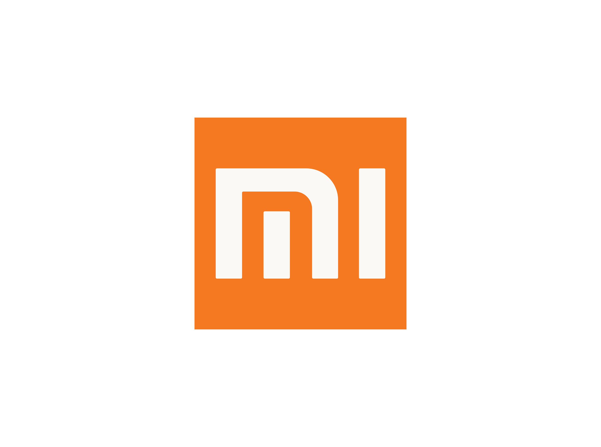

Xiaomi
Xiaomi to chińska firma technologiczna, która jest jednym z największych producentów urządzeń elektronicznych na świecie. Xiaomi specjalizuje się w produkcji szerokiej gamy produktów i usług, takich jak smartfony, tablety, laptopy, zegarki, telewizory, oczyszczacze powietrza i wiele innych.

Xiaomi 14 Pro
Flagowym modelem telefonu Xiaomi jest Xiaomi 13 Pro, który został zaprezentowany w marcu 2023 roku. Xiaomi 13 Pro ma 6,36-calowy ekran Super AMOLED z odświeżaniem 120 Hz, procesor Snapdragon 8 Gen 2, 8 GB lub 12 GB pamięci RAM i 256 GB pamięci wewnętrznej. Xiaomi 13 Pro ma też cztery aparaty tylnie z głównym sensorem 50 MP i zoomem optycznym 10x, a także aparat przedni 32 MP.